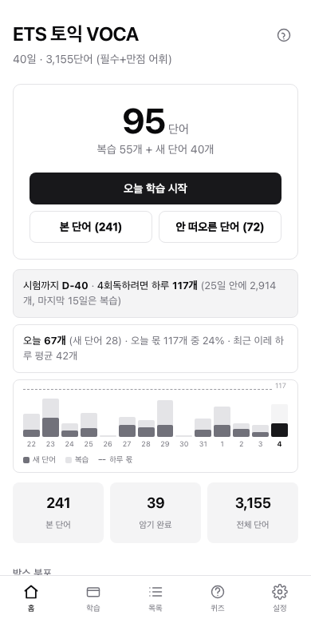
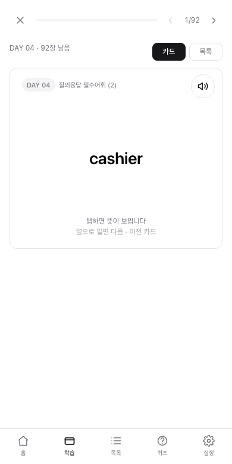
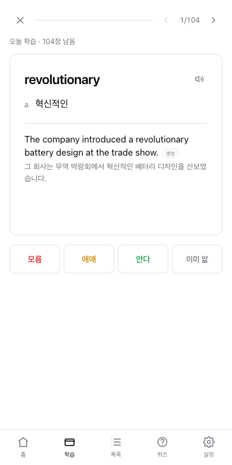
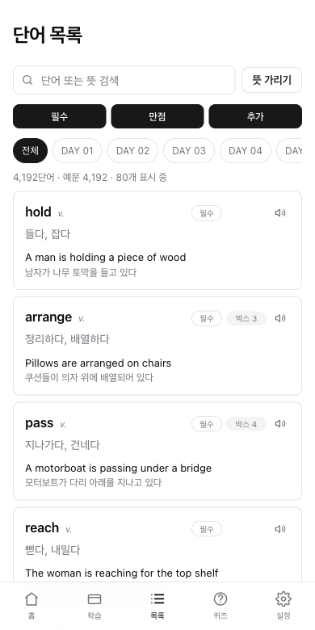
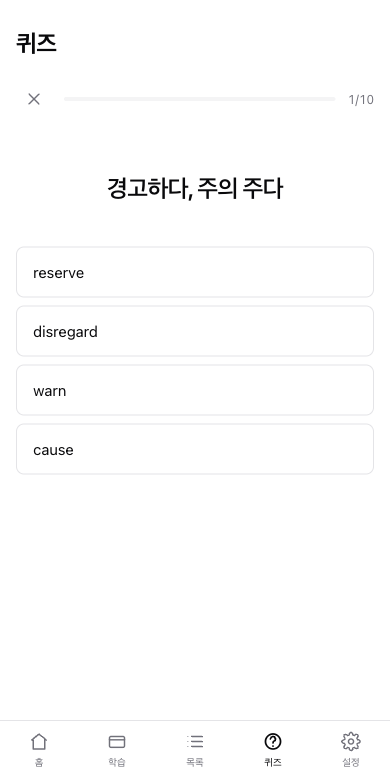
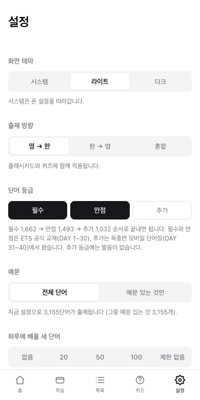

사용 가이드
앱으로토익 단어 4,192개를 폰에서 외우는 앱입니다. 인터넷이 끊겨도 돌아갑니다.
- 학습
- 오늘 할 일 전체. 아래 둘을 합친 것입니다.
- 복습
- 전에 채점했고 다시 볼 때가 된 단어.
- 새 단어
- 아직 한 번도 채점하지 않은 단어.
복습 120개 + 새 단어 20개라고 뜨면, 합쳐서 140개가 오늘 학습량입니다.
먼저, 앱처럼 쓰기
브라우저로도 되지만 홈 화면에 추가하면 주소창 없이 앱처럼 열리고, 지하철에서 인터넷이 끊겨도 돌아갑니다. 한 번만 해두면 됩니다.
| iPhone | Safari로 이 주소를 열고 → 아래 가운데 공유 버튼 → 목록을 내려 홈 화면에 추가 → 오른쪽 위 추가 |
| Android | Chrome으로 열고 → 오른쪽 위 ⋮ → 홈 화면에 추가 (또는 앱 설치) |
2. 와이파이에서 설정 → 오프라인용 발음 내려받기를 누릅니다. 발음은 용량이 커서 자동으로 받지 않습니다. 몇 분 걸립니다.
iPhone에서 Safari가 아닌 다른 브라우저를 쓰면 홈 화면 추가가 안 나올 수 있습니다. 그럴 때는 Safari로 여세요.
박스가 뭔가요
이 앱의 핵심입니다. 단어마다 1번부터 5번까지 상자가 있고, 상자 번호가 높을수록 다시 물어보는 간격이 길어집니다.
규칙은 한 줄입니다. 맞히면 다음 상자로 올라가고, 틀리면 1번으로 떨어집니다.
모르는 단어는 예외입니다. 모름을 누르면 상자가 1번으로 떨어지는 동시에 지금 이 세션에서 몇 장 뒤에 다시 나옵니다. 될 때까지 그 자리에서 반복하는 편이 자연스럽기 때문입니다.
예를 들어 aisle을 오늘 처음 맞히면 2번 상자에 들어가 이틀 뒤에 다시 나옵니다. 그때도 맞히면 3번으로 올라가 나흘 뒤, 또 맞히면 일주일 뒤. 반대로 5번 상자에 있던 단어라도 한 번 틀리면 1번으로 돌아가 내일 다시 나옵니다.
그래서 홈 화면의 박스 분포는 실력 그래프입니다. 공부를 계속하면 왼쪽(1·2번)이 줄고 오른쪽(4·5번)이 늘어납니다. 5번 상자에 들어간 단어 수가 곧 암기 완료입니다.
매일 할 일은 하나뿐입니다. 홈에서 ‘오늘 학습 시작’을 누르는 것. 오늘 나와야 할 단어를 앱이 알아서 골라줍니다.
복습은 안 자르고, 새 단어만 끊습니다
여기서 복습과 새 단어가 다르게 취급됩니다. 기한이 된 복습은 밀린 만큼 전부 나옵니다. 자르면 그대로 다음 날로 넘어가고, 밀린 양이 매일 쌓여 영영 따라잡지 못하기 때문입니다.
대신 설정 → 하루에 배울 새 단어로 새로 꺼내는 양만 조절합니다. 새 단어는 며칠 뒤 복습으로 돌아오므로, 오늘 많이 넣으면 그만큼 나중에 몰립니다.
| 하루 새 단어 | 2주 뒤 하루 복습량 | 3,159개 완주 |
|---|---|---|
| 10개 | 약 33장 | 315일 |
| 20개 | 약 74장 | 157일 |
| 50개 | 약 195장 | 63일 |
| 100개 | 약 372장 | 31일 |
없음으로 두면 새 단어를 꺼내지 않고 밀린 복습만 처리합니다. 여행이나 바쁜 주간에 쓰면 좋습니다. 제한 없음도 있지만 남은 단어를 한꺼번에 꺼내므로 시험이 코앞일 때만 쓰세요.
이렇게 쓰면 됩니다
단어장을 볼 때의 보통 순서 그대로 따라가면 됩니다.
- 훑어보기 — 홈에서 DAY를 누르면 카드가 시작됩니다. 위의 목록으로 훑기를 누르면 그 DAY 단어가 쭉 나열됩니다. 먼저 눈에 익히고 싶을 때 쓰세요.
- 외우기 — 목록의 DAY 00 외우기로 카드로 돌아갑니다. 모르는 단어는 모름을 누르세요.
- 모르는 것만 반복 — 모름으로 찍은 단어는 몇 장 뒤에 그 자리에서 다시 나옵니다. 내일까지 기다리지 않습니다. 맞힐 때까지 계속 돌아옵니다.
- 다음 DAY로 — 다 끝내면 DAY 00 시작 버튼이 바로 나옵니다. 홈까지 갈 필요 없습니다.
- 나중에 검증 — 며칠 뒤 퀴즈 탭에서 그 DAY를 골라 사지선다로 확인합니다. 퀴즈는 박스를 건드리지 않으니 부담 없이 보세요.
매일 홈의 오늘 학습 시작만 눌러도 됩니다. 그날 봐야 할 것을 앱이 골라줍니다. 위 순서는 새 DAY를 처음 뗄 때의 이야기입니다.
지금 바로 복습하고 싶을 때
DAY 3까지 떼고 4일차 절반을 했다고 해봅시다. 방금 본 것들이라 아직 복습 기한이 아니어서 오늘 학습 시작에는 나오지 않습니다.
그럴 때 홈의 배운 단어 복습을 누르세요. 지금까지 한 번이라도 본 단어를 전부 모아 기한과 상관없이 섞어서 내보냅니다. DAY를 하나씩 눌러 돌 필요가 없습니다.
| 버튼 | 무엇이 나오나 |
|---|---|
| 오늘 학습 시작 | 기한이 된 복습 + 오늘 몫의 새 단어 |
| 배운 단어 복습 | 지금까지 본 단어 전부 (기한 무시) |
| DAY 누르기 | 그 DAY 전체 (기한 무시, 안 본 단어 포함) |
모름은 다릅니다. 기한과 무관하게 박스가 1번으로 떨어지고 내일 다시 나옵니다. 모른다는 건 진짜 모르는 것이니까요.
퀴즈에도 배운 것 범위가 있습니다. 지금까지 본 단어만 골라 사지선다로 확인합니다.
화면 테마
설정 → 화면 테마에서 고릅니다. 시스템은 폰 설정을 그대로 따라가고(밤에 자동으로 어두워집니다), 라이트와 다크는 폰 설정과 무관하게 고정됩니다.
이 가이드 문서도 같은 설정을 따릅니다.
홈 화면 읽는 법

| 영역 | 뜻 |
|---|---|
| 큰 숫자 | 오늘 학습량. 아래에 복습 120개 + 새 단어 20개처럼 나뉘어 표시됩니다. |
| 한 번 이상 본 단어 | 한 번이라도 채점한 단어 수. 아직 안 본 단어가 ‘새 단어’입니다. |
| 암기 완료 | 5번 상자에 도달한 단어 수. |
| 박스 분포 | 상자별 단어 수. 오른쪽이 두꺼워질수록 잘 되고 있는 겁니다. |
| DAY 목록 | DAY별 진행률. 67/101은 101단어 중 67개를 봤다는 뜻이고, 아래 밑줄이 진행률 막대입니다. 탭하면 그 DAY만 학습합니다. |
플래시카드로 외우기


카드를 아무 데나 탭하면 뒤집히고, 아래에 버튼 세 개가 나타납니다. 정직하게 누르는 게 중요합니다. 버튼이 곧 다음 복습일을 정하기 때문입니다.
뒷면에는 뜻, 예문과 해석, 그리고 연어가 나옵니다. 연어는 그 단어가 실제로 자주 붙어 쓰이는 표현입니다 — hold a booklet, hold onto a railing처럼요. 시험에서는 단어 하나보다 이 덩어리가 통째로 나옵니다.
앞뒤로 오가기
카드 위쪽의 ‹ › 버튼으로 이동합니다.
- › 건너뛰기 — 채점하지 않고 다음 카드로. 기록이 남지 않으니 나중에 다시 나옵니다.
- ‹ 이전 — 앞 카드로 돌아갑니다. 그 카드에 매겼던 채점도 함께 취소됩니다. 잘못 눌렀을 때 쓰면 됩니다.
PC에서는 Space로 뒤집고 1·2·3으로 채점, ← →로 이동합니다.
이미 본 단어를 다시 보려면
홈의 오늘 학습 시작은 기한이 된 것과 새 단어만 꺼냅니다. 어제 본 단어는 아직 기한이 아니라 나오지 않습니다.
그럴 때는 홈에서 DAY를 직접 누르세요. 기한과 상관없이 그 DAY 전체가 나옵니다. 시험 전날 특정 DAY만 훑고 싶을 때도 이렇게 씁니다.
세 가지 등급
단어는 세 등급으로 나뉩니다. 필수 → 만점 → 추가 순서로 끝내면 됩니다.
| 등급 | 단어 수 | DAY | 출처 |
|---|---|---|---|
| 필수 | 1,663 | 1~30 | ETS 토익 기출 보카 (공식 교재)의 왼쪽 단. 먼저 끝내야 하는 핵심입니다. |
| 만점 | 1,496 | 1~30 | 같은 교재의 오른쪽 단(‘토익 만점 완성’). 점수를 더 올릴 때 봅니다. |
| 추가 | 1,033 | 31~40 | 독종반 모바일 단어장에서 가져와 공식 교재와 겹치지 않는 것만 남긴 어휘입니다. |
DAY 1~30이 공식 교재이고, DAY 31~40은 출처가 다릅니다. 홈 화면에서도 두 묶음으로 나뉘어 보입니다.
설정 → 단어 등급에서 고르면 학습·퀴즈·홈 통계가 전부 그 범위로 좁혀집니다. 여러 등급을 겹쳐 고를 수 있습니다 — 필수와 만점만 켜고 추가는 끄는 식입니다. 하나는 항상 켜져 있어야 합니다. 목록 화면에는 별도의 등급 필터가 따로 있습니다. 공부할 범위와 찾아볼 범위는 다를 수 있어서입니다.
DAY 31~40은 원본이 자주 쓰이는 순서로 정리해둔 것을 그대로 따랐습니다. DAY 31이 가장 자주 나오는 단어입니다.
예문에 붙은 ‘생성’ 표시
예문 옆에 작게 생성이라고 붙어 있으면 교재 예문이 아니라 만들어 넣은 문장입니다.
교재에는 원래 ‘만점 완성’ 단어의 예문이 없었고, ‘추가’ 등급도 마찬가지였습니다. 뜻만 외우는 것보다 문맥이 있는 편이 낫다고 보고 토익 지문에서 쓰일 법한 문장을 만들어 채웠습니다.
발음 듣기와 오프라인 준비
카드와 목록의 스피커 아이콘을 누르면 발음이 나옵니다. 3,155단어에 발음이 있습니다.
설정 → 발음에서 자동 재생을 켜면 알아서 울립니다. 영→한 문제는 카드가 나올 때, 한→영 문제는 뒤집은 뒤에 울립니다. 앞면에서 울리면 답이 새기 때문입니다.
와이파이에서 설정 → 오프라인용 발음 내려받기를 한 번 눌러두면 전부 저장됩니다. 몇 분 걸립니다.
목록에서 찾아보기

외우는 게 아니라 훑어보거나 찾아볼 때 씁니다.
- 검색 — 영단어, 한글 뜻, 예문 안의 문장까지 다 걸립니다.
- 등급 / DAY 필터 — 범위를 좁힙니다.
- 뜻 가리기 — 뜻에 흐림 처리가 걸립니다. 스스로 테스트할 때 쓰고, 꾹 누르면 잠깐 보입니다.
- 박스 배지 — 그 단어가 지금 몇 번 상자에 있는지 보여줍니다. 배지가 없으면 아직 한 번도 안 본 단어입니다.
퀴즈로 점검하기

사지선다입니다. 오답 선택지는 같은 DAY의 단어에서 뽑기 때문에 얼추 비슷한 것들이 나와 은근히 헷갈립니다.
- 범위 — 오늘 학습분 / DAY 선택 / 전체
- 문항 수 — 10, 20, 전체
퀴즈는 상자를 건드리지 않습니다. 사지선다는 찍어도 넷 중 하나는 맞기 때문에, 운으로 맞힌 단어가 ‘안다’로 처리되면 복습 간격이 잘못 늘어납니다. 상자는 플래시카드에서 직접 누른 것만 따릅니다.
원한다면 설정 → 퀴즈 결과에서 반영하도록 바꿀 수 있습니다. 끝나면 점수와 함께 틀린 단어만 모아서 보여줍니다.
진도 백업

학습 기록은 이 브라우저 안에만 저장됩니다. 서버에 올라가지 않습니다. 그래서 좋은 점과 불편한 점이 하나씩 있습니다.
- 좋은 점 — 계정도 로그인도 없고, 기록이 밖으로 나가지 않습니다.
- 불편한 점 — 폰에서 외운 기록이 PC에는 안 보입니다. 기기마다 따로 놉니다.
기기를 옮기거나 백업하려면 설정 → 진도 내보내기로 파일을 뽑고, 다른 기기에서 진도 불러오기로 넣으면 됩니다.
데이터는 어디서 왔나
| 출처 | 가져온 것 |
|---|---|
| Anki 덱 | 단어 3,155개, 품사와 뜻, 발음 3,155개 |
| 네이버 블로그 | 예문 1,585개와 해석, 연어 89개 |
| 엑셀 교재 | 필수 / 만점 등급 구분 |
| 독종반 모바일 단어장 PDF | 겹치지 않는 추가 어휘 1,033개 (DAY 31~40) |
| 직접 생성 | 예문이 없던 단어들 (생성 표시) |
셋 다 같은 교재라 단어는 일치합니다. 대조하는 과정에서 원본의 오타도 몇 건 잡아 고쳤습니다. defect의 뜻이 ‘결합’으로, aptitude가 ‘작성’으로 적혀 있던 것 같은 경우입니다.